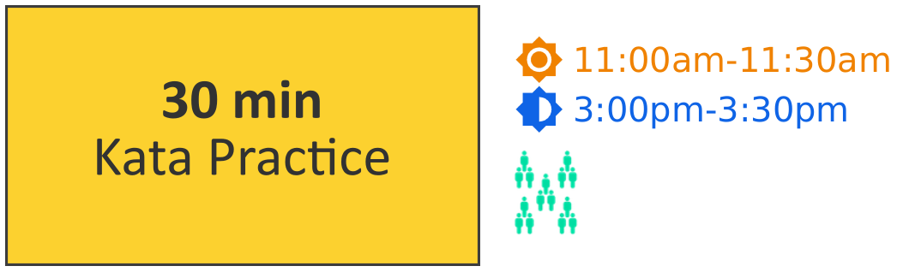
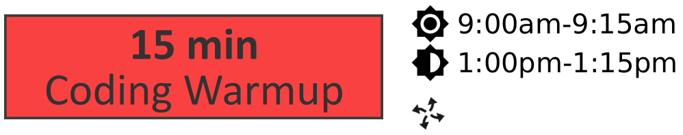
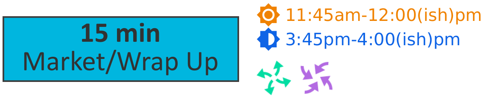
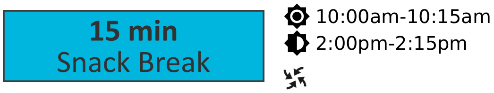
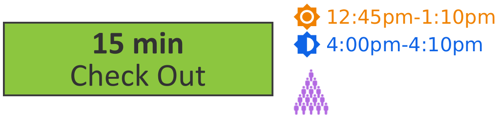
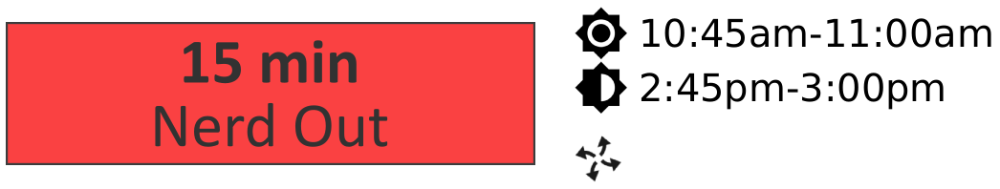
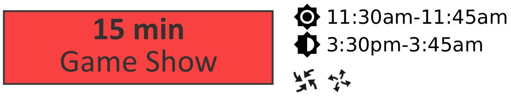
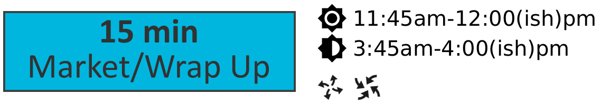
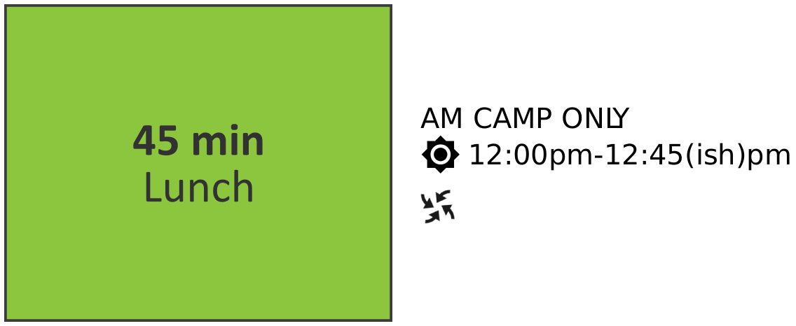

2 Tuesday Head Coach Script

Arrive at the check-in location at quarter of (8:45am/12:45pm).
Assign specific jobs to all TLs
Head to camp room on the hour (9am/1pm)
- Assign One TL to wait for any late students
TL keeps tablet
TL returns to camp room when all students arrive or at quarter past (9:15am/1:15pm)
Once TL returns, confirm attendance on backend is accurate with HQ over Slack

5 and 2 min warnings
With loose guidance from TLs, students review code from yesterday
Step in for TL who is waiting at check-in

15, 10, 5 and 2 min warnings
- Transision announcement:
Welcome back!
New Katas today!
So listen up to TLs
Monitor and assist TLs as they work on the next section katas
PM ONLY – take YOUR 30 min lunch break from 1:20-1:50

5 and 2 min warnings
Dismiss TLs for break – TLs should LEAVE the camp space so they can actually relax/check phones/not be interrupted by students
All students are off computers for the entire break
Monitor all students and keep it safe and sane

- Recommended game: (part ("(lib ts-camp-materials/scribblings/manual.scrbl)" "I_Like_My_Neighbors_Who___"))
Since this is a speedy game, and there is a risk of collisions, split the camp into a smaller-students group and a larger-students group

Breakout into camp teams
- Announce today’s prompt:
Share your favorite animal(k2) or character(3-10) from your camp’s fandom!
Monitor camp groups, inspiring further discussion as needed
- Transition annoucement:
Wrap up discussion
Back to katas
Earn more katas or extra challenges from TLs!
Monitor camp groups, assisting TLs as needed

Bring camp all together
- Announce rules & rewards of the game show:
TLs as buzzers or raised hands
Wait to be called on, no shouting out!
TS dollars/other reward?
- Today’s Whole Camp Daily Game Show Questions:
When is Game Jam? Friday
How do you earn your first badge? Second? Final? After earning 10 katas. 20 katas. Completing Game Jam.
What are our Core Values? It’s not about my code, it’s about what I CAN code. It’s not about me, it’t about my TEAM.
Team Leaders – cover your nametags. Who can tell me their Team Leader’s name? ...
What is the program we are coding in? DrRacket
Breakout into camp teams for TLs to lead camp-specific game show questions

PM only – ensure you finish with enough time to travel to check-out location by 4pm
Assign yourself or a TL to be Market Cashier
Students tidy their camp table before allowed to go to market
Welcome camp teams one at a time to visit market
Students done with market collect their things for lunch/home and line up by door

- Announce to all students the rules of lunch:
Absolutely no running
Be courteous and polite to staff/other diners
One dessert per day
Clean up correctly
Sit together
Gather all students with allergies and give them a tour
Ensure you finish with enough time to travel to check-out location by 12:45pm
Keep lunch time safe and organized